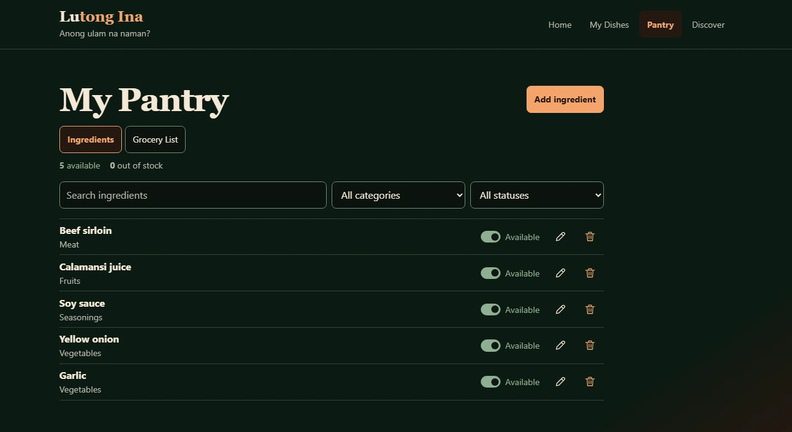
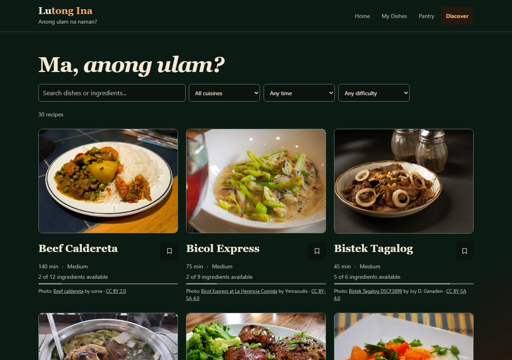
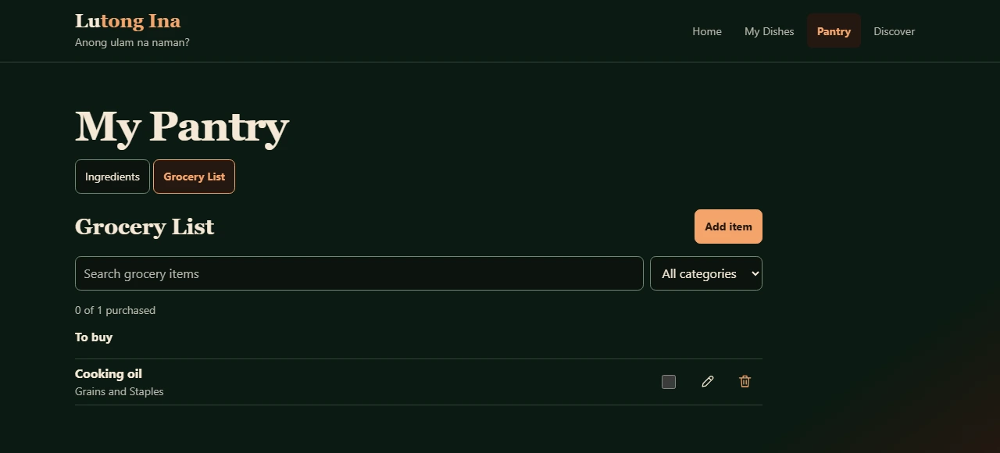
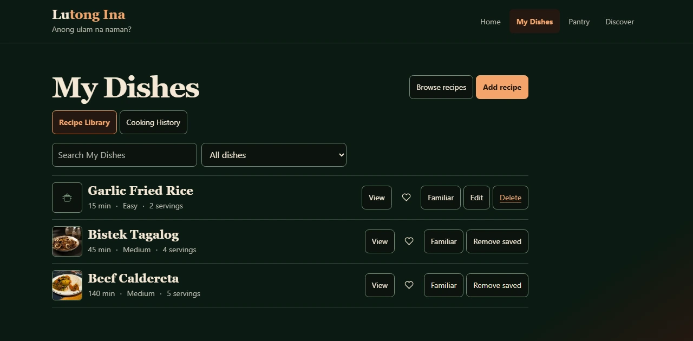

React Development / Personal Project
Lutong Ina
Building a smarter way to decide what to cook
Lutong Ina is a Filipino cooking companion designed to make everyday meal decisions easier. It recommends dishes based on available ingredients, personal recipes, and cooking history, while helping users organize their pantry and grocery list.

- 30 Filipino recipes
- 43 recipe photographs
- 105 automated tests
The challenge
Anong ulam na naman?
Deciding what to cook means checking what’s already in the kitchen, remembering what you cooked recently, and deciding whether another grocery trip is worth it. A recipe catalog helps you find a dish when you know what you want. Lutong Ina starts with the decision itself.
The goal was to make that decision easier, use ingredients already on hand, and encourage variety while keeping familiar meals in rotation. Connecting the recommendation to the pantry and grocery list gives users a clear next step when they’re missing something.
The user experience
- Home
- Choose a cooking mode, see a suggestion, and check what you have and what’s missing.
- My Dishes
- Keep saved catalog dishes and personal recipes together, manage Favorite and Familiar preferences, and review cooking history.
- My Pantry
- Mark ingredients available or out of stock and manage the grocery list in a separate view.
- Discover
- Browse or filter the built-in catalog, then open dishes for ingredients, instructions, and pantry coverage.
- Stock pantry
- Receive recommendation
- Review missing ingredients
- Create grocery list
- Record cooked meal


From a recipe, users can add missing ingredients to the grocery list. Purchased items can then be explicitly transferred to the pantry. The pantry tracks availability. Recording a cooked meal leaves availability and grocery items as they were and informs future recommendations.


Recommendation engine
V1 uses rule-based ingredient matching and controlled random selection in two modes. The engine compares the available pantry with built-in and personal recipes, then uses the latest cooking record for each recipe to inform its priority. It runs entirely in the browser.
- Read pantry, catalog, and history
- Normalize and compare ingredients
- Apply the selected mode
- Rank or draw from eligible dishes
- Present the next suggestion
Use what I have
Recipes need at least one available ingredient to qualify. The engine orders them by unrounded coverage, fewest missing ingredients, cooking recency group, shortest cooking time, then name. Equivalent ingredients count once, water is excluded, and the comparison checks presence without comparing recipe quantities.
I’ll go grocery shopping
The full catalog is eligible. Each draw randomly selects among unseen recipes in the highest available history group. In priority order, those groups are never recorded, last cooked at least seven local calendar days ago, three to six days ago, one to two days ago, and today.
Something new
The same history-aware draw runs on dishes the user hasn’t marked Familiar. If every dish is familiar, the full catalog is eligible. Each mode keeps a separate session round and skips recipes it has already shown in that round. Recently cooked meals remain eligible, and a fresh round can surface them again.
React application architecture
React gave me a way to manage several connected screens while reusing recipe views and actions. main.jsx mounts App.jsx, which owns the active screen, pantry, recipe library, grocery list, cooking history, and recommendation rounds. Screens receive data through props and send user actions back through callbacks.
- App.jsx
- Coordinates shared state, navigation, and saves.
- Home · My Dishes · My Pantry · Discover
- Render shared data with reusable components. Controlled form inputs and local state hold drafts, filters, and selections.
- Utility modules
- Handle matching, recommendations, validation, recovery, and storage operations.
Changing pantry availability updates the match data used by Home and recipe details. The grocery action checks that same current data before adding missing items. React state drives what’s on screen, while localStorage and IndexedDB keep durable records between visits.
Browser-local persistence
I kept V1 browser-local so the complete cooking workflow could work without maintaining a backend or an account system. Each storage mechanism handles the data it suits.
- localStorage
- Pantry ingredients, personal recipe metadata, library preferences, grocery items, and cooking history are serialized as JSON and loaded again after a refresh.
- IndexedDB
- User-uploaded recipe photographs are stored as blobs. Recipe metadata keeps a photo ID, avoiding large Base64 strings in localStorage.
Data stays with the current browser profile on that device. There’s no account sync or cloud backup, and clearing site storage can remove saved data. Built-in photos depend on Wikimedia Commons and fall back to a placeholder if they fail to load.
Engineering decisions
Match ingredients through explicit aliases
pantry.js trims names, lowercases them, and collapses extra spaces. Its alias map treats Bawang and Garlic as one ingredient. Explicit equivalences keep matching predictable and avoid counting an unrelated item simply because its name is similar.
Protect saved data during recovery
Storage utilities validate the shape of saved records and distinguish failed reads from invalid or partially recoverable data. Users can retry a read or save, and supported retry paths can merge recovered records with changes made during the session. Invalid and partial data stays protected until the user confirms replacement. If writes keep failing, in-memory changes can still be lost on refresh.
Save pantry changes before grocery cleanup
Purchased items stay on the grocery list unless the pantry save succeeds and the grocery list can also be saved. If the pantry save succeeds but grocery cleanup fails, retrying recognizes ingredients already represented in the pantry, so it can finish cleanup without adding duplicates. The two writes can succeed independently.
Stage photographs before updating recipes
The app checks file size and JPEG, PNG, or WebP signatures, decodes via an object URL, and attempts a WebP conversion with the longest edge capped at 1,200 pixels when resized. It retains the source if conversion offers no benefit and no resize was needed. Temporary object URLs are revoked after use.
The blob is saved before recipe metadata points to it, so a failed upload doesn’t leave a new broken reference. Unused blobs are cleaned up only when saved metadata is valid and Web Locks can confirm that no other app tab is open. Otherwise, the app keeps the files.
Preserve the name recorded with each meal
A cooking event stores the recipe ID, a snapshot of its name, and a timestamp. The ID supports recommendation recency, while the stored name keeps the history entry meaningful after the recipe is renamed or removed.
Testing and quality assurance
All 105 tests passed when I ran Node’s built-in test runner with node --test against the V1 source checkout. The suite covers alias matching, recommendation ranking and rounds, personal recipe validation, grocery generation and transfer, cooking history and recency, storage recovery, photo handling, and catalog integrity.
For this case study, I exercised the deployed workflow in Chrome with a fresh browser profile, including pantry entry, recommendations, grocery generation, recipe saving, and meal recording. I also checked the app’s mobile rendering. The automated tests and these browser checks cover different parts of the experience.
From vanilla JavaScript to React
Lutong Ina builds on the state and business-logic work I started with vanilla JavaScript. In React, the challenge was keeping several screens consistent as shared data changed. Moving logic into utility modules let me test recommendations and recovery independently of how the interface renders.
Potential follow-up work includes a backend API, user accounts, cloud synchronization, and more personalized or AI-assisted recommendations. V1 delivers the browser-local workflow with the recommendation rules described above.
Recipe photography credits are displayed in the application and listed in the project’s image credits.